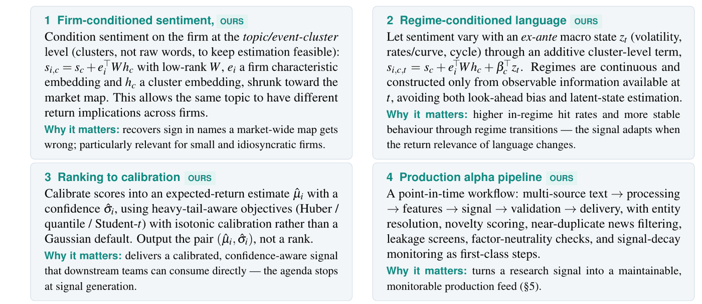

按公司与市场状态调整的 NLP 阿尔法信号
计划中 · 项目 · 研究计划 · 独立研究备忘录，2026 年 6 月 · 执行摘要（1 页）、研究计划（2 页）、技术附录（7 页）· 全部项目
我撰写的内容
- 问题诊断：常用的已发表文本信号方法（SESTM 式监督情绪模型、Loughran–McDonald 词典、仿商业数据商的情绪评分、嵌入模型）有三个共同假设：同一段文字对每家公司、在每种市场环境下含义都相同，而且输出只是排序（执行摘要第 1 页；研究计划第 1 页）。
- 四种模型设定及估计方案（附录 §§B–E，第 1–3 页）：在 200–500 个主题或事件聚类层面加入公司偏移项，取低秩形式（s_{i,c} = s_c + e_i' W h_c，W = UV'），并向全市场的情绪映射收缩；加入加性的市场状态项 \beta_c' z_t，状态变量少而连续、事前可观测（4–6 个，不估计隐马尔可夫状态）；用保序回归或 Platt 映射，在 Huber、分位数或 Student-t 损失下把得分校准为 (\hat\mu_i, \hat\sigma_i)；按事件类型估计信息衰减的半衰期。
- 一套按时点设计的生产方案：从数据采集到再训练共八个环节，每个环节都标明主要的失效方式（附录 §F，第 4 页）；漂移监控（群体稳定性指数、KS 检验、滚动信息系数（IC））与冠军／挑战者式再训练；带版本号的交付约定（研究计划第 2 页）。
- 分五个阶段、逐级把关的首期实施方案，每个阶段都有成功标准；以及对风险与应对措施的自我审视（附录 §§I–J，第 6 页）。
对投研团队的价值 已发表的文本策略，结果大多未计交易成本，换手率高，又偏向小盘股；基于大语言模型的结果，如果模型“见过”未来的数据，还可能被高估。投研团队需要的是按时点生成、写明持有期限和置信度的信号，一份说明它如何构建的记录，以及能及时发现信号失效的监控。这份计划的重心正是把信号交付给投研团队这一环节，而不是回测。
大语言模型的位置 在这份计划里，大语言模型只作为后续加入的输入，供可解释的评分器使用，而不是端到端的“神谕”；前视污染被视为首要的建模约束。盲测（对隐去公司名称的新闻，如“Company A”，进行打分，检验模型读的是文本内容还是记住了公司）与第 1–2 阶段同步进行（附录 §§I、K，第 6–7 页）。
计划中设定的方法 金融文本分析 低秩与收缩估计 概率校准 时点一致的防泄露控制 漂移监控（设计）
阅读提示。 这是一份研究计划，不是研究结果。文中没有我本人的任何回测；文件中的业绩数字都是其他作者已发表的结果，除非另有说明，均未计交易成本。文件提到我复现过四种已发表的基线方法，但没有记录这些复现所用的数据来源、样本期或结果，因此本页不报告任何复现结果，并把有据可查的复现列为计划的第 1 阶段。这是我个人的独立工作，与任何机构或雇主无关，也未获其认可。文件中标注 OURS 的是我提出的方案，标注 PRIOR-LIT 的是其他作者已发表的结果（除非另有说明，均未计交易成本），标注 FUTURE 的是后续拓展；文中的“we”“our”及“our mandate”指本计划的范围（从文本到信号），全文由我独立完成。
图表 1：三个假设，四个方向
| 现有流程的假设 | 计划的做法 | 设定 |
|---|---|---|
| 语言不随公司而变：同一个词对每家公司的收益含义相同 | 1. 在主题或事件聚类层面按公司调整情绪，并向全市场映射收缩 | s_{i,c} = s_c + e_i' W h_c，W 为低秩（附录 §B，第 1 页） |
| 语言不随时间而变：同一个词的收益含义在各种市场环境下都稳定 | 2. 在聚类层面加入一个加性项，随事前可观测的市场状态变化 | s_{i,c,t} = s_c + e_i' W h_c + \beta_c' z_t（附录 §C，第 2 页） |
| 只输出排序：得分能给股票排序，却不给幅度和置信度 | 3. 在对厚尾稳健的损失函数下，把得分校准为预期收益估计及其置信度 | (\hat\mu_i, \hat\sigma_i)（附录 §D，第 3 页） |
| 生产环节：时间戳或实体匹配造成的信息泄露，以及不易察觉的信号衰减（附录 §H，第 6 页） | 4. 一条按时点设计的流程，从多来源文本一直到带版本号的交付约定，内置泄露筛查、衰减监控与再训练 | 八个环节（附录 §F，第 4 页） |

（在新标签页打开大图）要点。 每个方向放松一个明确的假设，并各自给出模型设定和估计方案；目前都还没有估计。
图表 2：已完成、有描述、计划中、后续拓展
| 状态 | 内容 |
|---|---|
| 已完成 | 三份文件（2026 年 6 月）：四种模型设定、估计方案与推导；按时点设计的生产、监控、再训练与交付方案；对风险及应对措施的自我审视。 |
| 有描述、无实证记录 | 附录（§H，第 5 页）以定性方式描述了对四条基线流程（SESTM 式、Loughran–McDonald 词典、仿商业数据商的情绪评分、嵌入基线）的复现，但没有说明所用数据来源、样本期或股票范围，也没有报告我本人的任何数字；首期实施计划仍把基线复现列为第 1 阶段（§I，第 6 页）。 |
| 计划中、尚未实施 | 估计公司偏移项、市场状态项、校准映射与衰减半衰期；盲测（隐去公司名称的输入）验证，与第 1–2 阶段同步（附录 §I，第 6 页）；附录中所有“计划中的诊断”。 |
| 后续拓展 | 以大语言模型嵌入作为特征；按时点的检索增强生成；考虑事件类型的工具与智能体工具，均须通过同样的按时点验证（研究计划第 2 页；附录 §K，第 7 页）。 |
要点。 目前已有的是设计：模型设定、估计方案、生产方案和自我审视。本页没有任何实测结果。
图表 3：逐级把关的首期实施
| 阶段 | 内容 | 成功标准 |
|---|---|---|
| 1．基线 | 复现 SESTM、Loughran–McDonald 词典、仿商业数据商的情绪评分和嵌入基线；严格时点一致、滚动前推（walk-forward）、次日开盘执行 | 得到稳定的词表和可比的样本外排序优势 |
| 2．按公司调整 | 从单词改为主题或事件聚类；加入低秩的公司偏移项，并按特征收缩 | 样本外 IC 较第 1 阶段有正的提升，且集中在小盘股和特质风险较高的个股上 |
| 3．按市场状态调整 | 加入加性的事前状态项（连续状态，不用隐马尔可夫模型） | 按市场状态分层的 IC 改善，状态转换期间更稳定 |
| 4．校准 | 用保序回归或 Platt 映射，在稳健目标函数下把得分映射为 (\hat\mu_i, \hat\sigma_i) | 校准曲线可靠，区间覆盖率达标 |
| 5．验证 | 完整的信号报告：IC、命中率、衰减、换手率、容量代理、小盘集中度、行业中性、因子暴露；未计成本与扣除成本两种口径 | 信号带来增量信息、与已有因子正交，扣除成本后收益仍为正，且各项暴露均有记录 |
IC 即信息系数（信号与随后收益的秩相关）。资料来源：技术附录 §I，第 6 页（PDF，仅供学术用途）。
要点。 如果某项拓展相对上一阶段没有带来样本外、扣除成本后的增益，就报告这一负面结果，不上线这项拓展。
交付约定。 每个信号交给投研团队的内容：信号编号、截至时间戳、持有期限、\hat\mu、置信度与覆盖范围（研究计划第 2 页），并附上事件半衰期 \hat\tau（附录 §E，第 3 页），以便让持有期与信息衰减的快慢相匹配。
延伸阅读
- 《特征库》：计划中的公司嵌入由股票特征构成，正是这篇论文研究的输入。
- 相关项目：NA-IPCA 工具包，同样的审计记录习惯，用在估计代码上。
- 相关项目：AI 辅助研究工作流程：计划只把智能体工具当作研究加速手段，并要求其通过同样的按时点验证（附录 §K，第 7 页）。